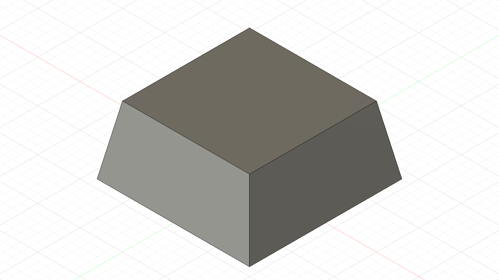
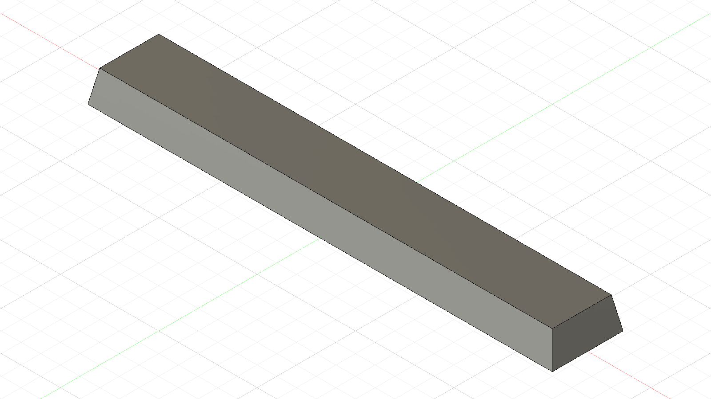
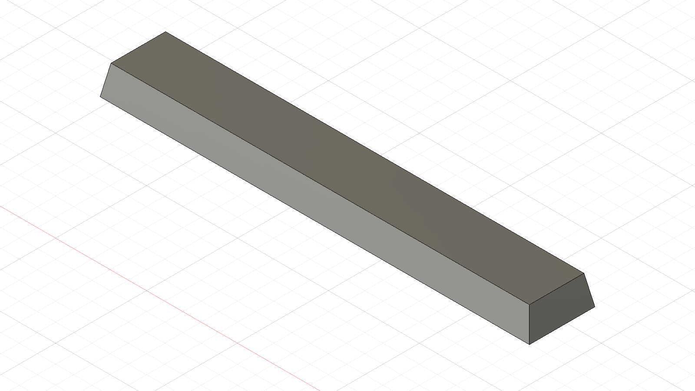
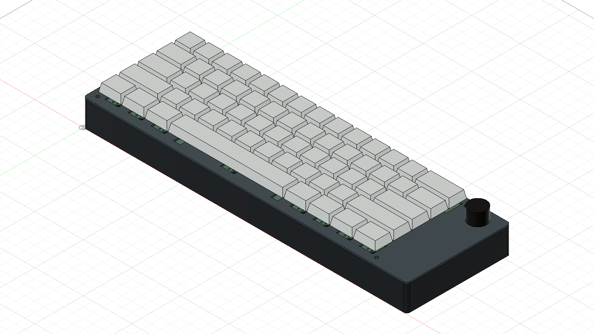

Generic geometry references; not manufacturer models or printable functional keycaps.

Created a tapered, hollow keycap envelope to reserve space for a standard key. It has no functional MX socket.

Created the longer ANSI spacebar envelope using the same approximate profile.

Added a center switch marker and two nominal stabilizer markers beneath the spacebar. These are alignment references, not working stabilizer mechanisms.

Positioned all 61 keycap envelopes at the PCB switch centers, with wider modifier keys, to inspect the overall layout in Fusion.